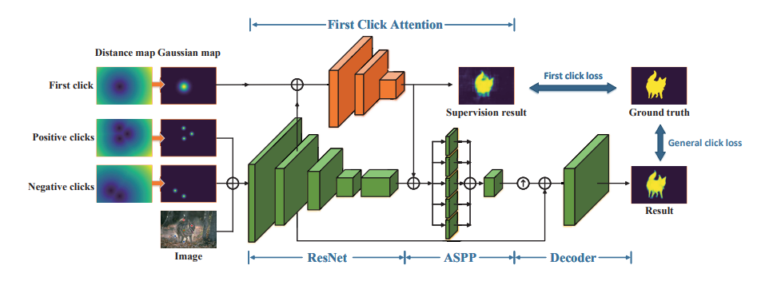
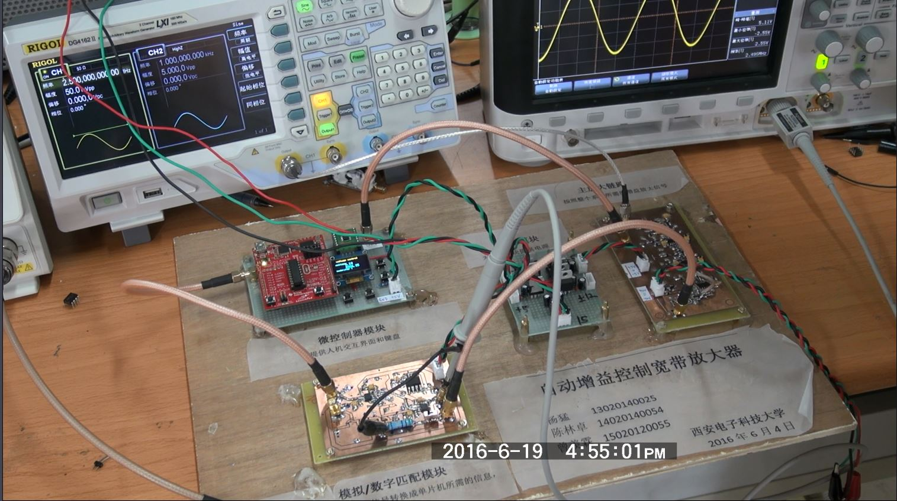

|
Google Scholar / Github / Email / My name is Lin-Zhuo Chen (陈林卓), I am now a research assistant in Nanjing University,
working closely with Prof. Yao Yao .
Before that, I was a master student at Nankai University, supervised by Prof. Ming-Ming Cheng.
My research interests include Neural Rendering and Semantic/Geometry estimation. I am also a main author of Pointrix.
|

|
|
|
Open Source Project Arxiv Pre-print 2024 (WIP) 
PDF(Comming soon) | Document | Code |

|
Lin-Zhuo Chen, Zheng Lin, Ziqin Wang, Yong-Liang Yang, and Ming-Ming Cheng IEEE TIP, 2021. (SCI-1, CCF-A) 
PDF | Code |
|

|
Zheng Lin, Zhao Zhang, Lin-Zhuo Chen, Ming-Ming Cheng and Shao-Ping Lu IEEE TIP, 2021. (SCI-1, CCF-A) 
PDF | Code | Project |

|
Jinyao Zhu* and Lin-Zhuo Chen* Code | Video |
|

|
Meng Yang*, Lin-Zhuo Chen* and Xian-Lin Zeng* Video |